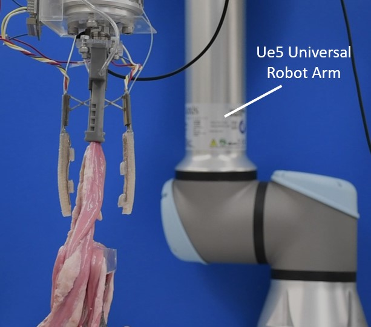

TL;DR
A modular soft robotic laparoscopic grasper for atraumatic small-intestine retraction.
Overview
The prior portfolio states that Jungjae contributed to the laparoscopy project by assisting with strength testing, building miniaturized scissor lift mechanisms, creating soft force sensors, and developing miniaturized fiber-reinforced soft actuator prototypes.
Key Contributions
- Assisted blocked-force and grip testing for actuator reliability.
- Constructed miniaturized grasper mechanisms and actuator components.
- Created soft force sensor prototypes using a magnetometer and magnet-based sensing approach.
Method Or System Overview
The public project materials describe a soft robotic grasper for minimally invasive surgery, combining soft actuation, mechanism prototyping, and experimental testing for atraumatic tissue interaction.
Figures

Citation
Kinnicutt, L., Gaeta, L. T., Rogatinsky, J., Lee, J., Cameron, A., Naik, A., Hess, D., and Ranzani, T. A Soft Robotic, Modular Laparoscopic Grasper for Atraumatic Retraction of the Small Intestine. Device, Volume 2, Issue 10, 2024.